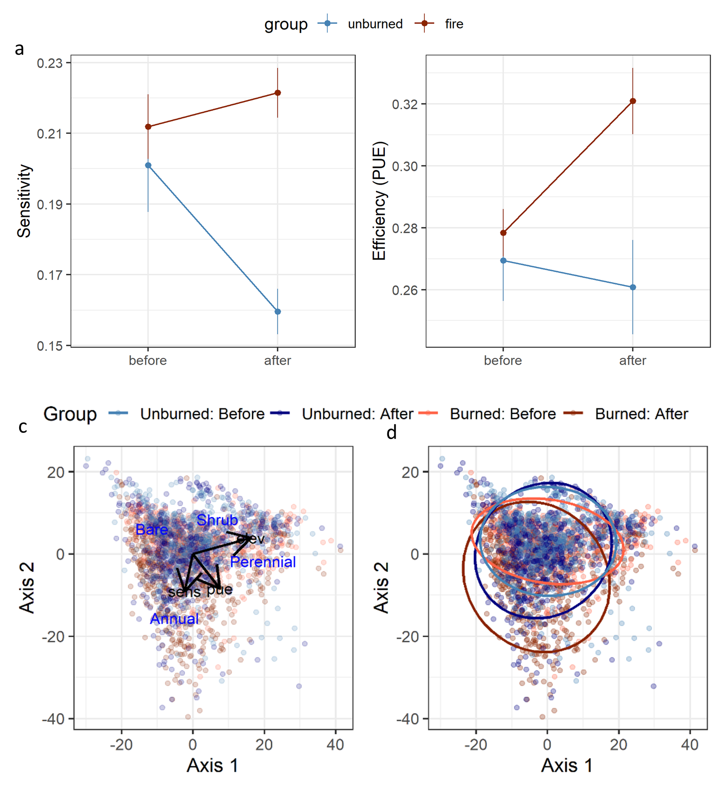

About Me
Hello! I am a Ph.D. student in the Suding Lab at the University of Colorado Boulder. In my Ph.D. I am studying how plant communites and ecosystems respond to changes in our climatic conditions with the goal of informing land management decisions. I am particularly interested in the impact of precipitation variablity in western rangelands. I previously investigated the behavioral ecology of checkerspot butterflies in coastal Maine.
Research
Here are a few projects I've worked on:

- Fire impacts in the Great Basin - Fire is rapidly altering the historical sagebrush steppe ecosystem of the northern Great Basin. In this project I used gridded datasets to asses how fire was altering the relationship between primary production and precipitation across a swath of northern Nevada. We found that as fire converts sagebrush ecosystems to annual grass dominated systems the senstivity of production to precipitatoin increases, leading to the potential for more inter-annual fluctuations in production.
- Drought impacts on plant communities -
- Plant traits in restoration -